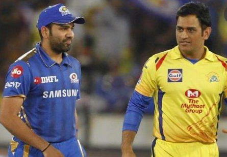

| News-portal360 |
|---|
১৩ জুলাই
ওয়াসিম-মুরালিদের স্মৃতি ফেরালেন গ্যাব্রিয়েল
প্রতিপক্ষের স্টাম্প উৎপাটনে নজর দিয়েছেন শ্যানন গ্যাব্রিয়েল। ছবি: রয়টার্সসাউদাম্পটনে গতির ঝড় তুলেছেন শ্যানন গ্যাব্রিয়েল। নিজের পা সামলাতে না পেরে আবারও উইকেট হাতছাড়া হয়েছে তাঁর। তবু গতি আর বাউন্সে প্রতিপক্ষের ৭ উইকেট তুলে নিতে কস্ট হয়নি তাঁর। আজ শেষ দিনে উইকেট বাড়ানোর সম্ভাবনাও উড়িয়ে দেওয়া যাচ্ছে না। উইন্ডিজ পেসার নির্ঘাত চাইবেন উইকেটে থাকা আর্চার কিংবা মার্ক উডের স্টাম্প উড়িয়েই সে কাজটা করতে। প্রতিপক্ষের স্টাম্প ভাঙতেই যে ভালো লাগে তাঁর। টেস্ট ক্যারিয়ারে গতকাল পর্যন্ত ১৪০ উইকেট পেয়েছেন। এর মাঝে ৪৯টিই বোল্ড। অর্থাৎ ৩৫ ভাগ সময়ই প্রতিপক্ষকে নাস্তানাবুদ করে উইকেট পেয়েছেন। আর ইংল্যান্ডের বিপক্ষে সিরিজের প্রথম টেস্টে তো সেটা আরও বেশি। সাত ব্যাটসম্যানের পাঁচজনই বোল্ড হয়েছেন গ্যাব্রিয়েলের বলে। আর এতেই ভুলে যাওয়া এক দৃশ্য দেখল টেস্ট ক্রিকেট। টেস্টে ইংল্যান্ডের বিপক্ষে কিংবা ইংল্যান্ডের মাটিতে কোনো বোলারের পাঁচবার স্টাম্প ভাঙার দৃশ্য দেখা গেছে প্রায় দুই যুগ আগে। ১৯৯৮ সালে ওভালে সে কাজটা অবশ্য কোনো পেসারের নয়। ইংল্যান্ডের বিপক্ষে সেবার ১৬ উইকেট পেয়ে দলকে অনায়াস জয় এনে দিয়েছিলেন মুত্তিয়া মুরালিধরন। একটুর জন্য বিশ্ব রেকর্ড ছুঁতে (৯/৬৫) না পারলেও দুই ইনিংস মিলিয়ে প্রতিপক্ষের পাঁচজনকে বোল্ড করার কীর্তির তৃপ্তি অন্তত পেয়েছিলেন মুরালি। ইংল্যান্ডের বিপক্ষে শ্যাননের আগে কোনো পেসারের এমন কীর্তিটার বয়স আরও পুরোনো। সেই ২৬ বছর আগে ত্রিনিদাদে তান্ডব চালিয়েছিলেন কার্টলি অ্যামব্রোস। ১৯৪ রানের লক্ষ্যে খেলতে নেমেছিল ইংল্যান্ড। অ্যামব্রোসের ২৪ রানে ৬ উইকেটের স্পেলের সামনে ৪৬ রানে গুটিয়ে যায় ইংলিশরা। প্রথম ইনিংসেও ৬০ রানে ৫ উইকেট পাওয়া অ্যামব্রোস ১১ উইকেটের পাঁচটিই নিয়েছিলেন ব্যাটসম্যানের স্টাম্প উপড়ে নিয়ে। ইংল্যান্ডের মাটিতে সর্বশেষ কোনো পেসারের এমন কীর্তির বয়স আরও বেশি। ওভালেই ইংল্যান্ডের বিপক্ষে খেলতে নেমেছিল পাকিস্তান। ওয়াসিম আকরাম ও ওয়াকির ইউনিসের যুগলবন্দী পাকিস্তানকে ১০ উইকেটের জয় এনে দিয়েছিল। দুই ইনিংস মিলে ৯ উইকেট পাওয়া ওয়াসিম টেল এন্ডারদের স্টাম্প নিয়ে মেতেছিলেন ধ্বংসযজ্ঞের খেলায়। ওয়াসিমের ২৮ বছর পর কোনো পেসার ইংল্যান্ডের মাটিতে পাঁচজনকে বোল্ড করল। পাকিস্তানি কিংবদন্তির মতোই জয়ের হাসি নিয়ে আজ মাঠ ছাড়তে পারবেন, এ আশা নিয়েই আজ নামবেন গ্যাব্রিয়েল।

অমিতাভ-অভিষেকের পাশে টেন্ডুলকাররা
করোনায় আক্রান্ত হয়েছেন বলিউড তারকা অমিতাভ বচ্চন ও তাঁর ছেলে অভিষেক বচ্চন। ফাইল ছবিকরোনায় আক্রান্ত হয়েছেন বলিউড সুপারস্টার অমিতাভ বচ্চন ও তাঁর ছেলে বলিউড তারকা অভিষেক বচ্চন। অমিতাভ বচ্চনকে শনিবার সন্ধ্যায় মুম্বাইয়ের নানাবতী হাসপাতালে ভর্তি করা হয়। রাতে অমিতাভের করোনা পরীক্ষার ফল পজিটিভ আসে। এর কিছুক্ষণ পর অমিতাভের অভিনেতা পুত্র অভিষেক বচ্চনও টুইট করে নিজের ও তাঁর বাবার করোনায় আক্রান্ত হওয়ার খবর দেন। পরে অবশ্য ভারতীয় সংবাদ মাধ্যম নিশ্চিত করেছে, অভিষেকের স্ত্রী ঐশ্বরিয়া রাই বচ্চন ও তাঁদের একমাত্র কন্যা আরাধ্য বচ্চনও করোনা আক্রান্ত হয়েছেন। টু্ইটার, ফেসবুক ও ইনস্টাগ্রামে অমিতাভ লিখেছেন, ‘আমি করোনায় আক্রান্ত হয়েছি। হাসপাতালে ভর্তি হয়েছি। হাসপাতাল থেকে জানানো হয়েছে, পরিবারের সবাইকে করোনা পরীক্ষা করাতে হবে। ইতিমধ্যে আমার বাড়ির সবার নমুনা নেওয়া হয়েছে। পরীক্ষা হচ্ছে। তবে এখনো তাদের রিপোর্ট পাইনি।’ অভিষেক লিখেছেন, ‘আমি আর বাবা দুজনই কোভিড–১৯ পজিটিভ। আমাদের দুজনেরই কিছু উপসর্গ ছিল। আমরা হাসপাতালে ভর্তি। অনুরোধ করছি আপনারা আতঙ্কিত না হয়ে শান্ত থাকবেন।’ খারাপ খবর বাতাসের আগে ধায়, এমন একটা প্রবাদ আছে। অমিতাভ-অভিষেকের এই দুঃসংবাদ ছড়াতেও সময় লাগেনি। ফলে বিশ্বের বিভিন্ন প্রান্ত থেকে এই দুই তারকার জন্য করা হচ্ছে প্রার্থনা। ভারতের ক্রিকেটপাড়াও মুষড়ে পড়েছে যেন। সবার এখন একটাই চাওয়া, অমিতাভ-অভিষেকের সুস্থতা। ক্রিকেট কিংবদন্তি শচীন টেন্ডুলকার যেমন অমিতাভের টুইটটা রি-টুইট করে লিখেছেন, ‘নিজের প্রতি যত্ন নেবেন অমিতজি। আপনার সার্বিক সুস্থতা ও দ্রুত আরোগ্য কামনা করছি।’ আরোগ্য কামনা করেছেন ভারতীয় স্পিনার হরভজন সিংও। ওদিকে অমিতাভ অভিষেক ছাড়াও সাবেক ক্রিকেটার চেতন চৌহানের সুস্থতা কামনা করেছেন আরেক সাবেক পেসার রূদ্রপ্রতাপ সিং। ওদিকে মোহাম্মদ শামি লিখেছেন, ‘ইনশা আল্লাহ, আপনারা তাড়াতাড়ি সুস্থ হয়ে বাসায় ফিরে আসবেন। ভারতের জনগণ আপনাদের পাশে আছে।’
টেস্টের টপ অর্ডার ব্যাটিংয়ে ১২ দলের মধ্যে ৯ নম্বরে বাংলাদেশ।

টেস্ট ক্রিকেটে গত দুই বছর দাপট দেখিয়েছে বোলাররা। প্রথম ইনিংসে ৩০০ রান করতে পারলেই এখন টেস্ট জয়ের ভিত পাওয়া যায়। প্রায় প্রত্যেক টেস্ট খেলুড়ে দেশই ব্যাটিং সমস্যায় ভুগছে। টেস্টের ব্যাটিংয়ে বাংলাদেশের ব্যাটসম্যানেরা বাকিদের তুলনায় একটু বেশিই পিছিয়ে। টেস্ট ম্যাচে নিয়ন্ত্রণ প্রতিষ্ঠা করতে প্রথম ইনিংসে বড় স্কোর খুবই দরকার। সে জন্য ওপরের দিকের ব্যাটসম্যানদের কাছ থেকে দল বড় রান প্রত্যাশা করে। কিন্তু ২০১৮ সাল থেকে সেরা পাঁচ ব্যাটসম্যানের সম্মিলিত গড়ে বাংলাদেশের অবস্থান ১২টি টেস্ট খেলুড়ে দেশের মধ্যে ৯ নম্বরে। এর আগের কয়েক বছর টেস্ট ক্রিকেটে বাংলাদেশের টপ অর্ডার ব্যাটসম্যানদের সময় ভালো কাটলেও গত দুই বছরে গ্রাফ নিচে নেমে এসেছে। আফগানিস্তান এবং জিম্বাবুয়েও এখন এ জায়গায় বাংলাদেশের চেয়ে এগিয়ে। গত দুই বছর ধারাবাহিকভাবে সেরা পাঁচ টেস্ট ব্যাটসম্যানকে একসঙ্গে খেলাতে পারেনি বাংলাদেশ। বিশ্রাম ও নিষেধাজ্ঞার কারণে সাকিব আল হাসান টেস্ট দলে নিয়মিত ছিলেন না। চোট ও বিশ্রামের কারণের তামিম ইকবালকেও নিয়মিত টেস্ট দলে পায়নি বাংলাদেশ। এই বছর টেস্ট দল থেকে বাদ পড়েন আরেক অভিজ্ঞ ব্যাটসম্যান মাহমুদউল্লাহ। মুমিনুল হক ও মুশফিকুর রহিম ছাড়া বাংলাদেশ দলের সেরা পাঁচ ব্যাটসম্যানের কেউই ধারাবাহিকভাবে টেস্ট খেলেনি। যার প্রভাব পড়েছে পরিসংখ্যানেও।
‘গাঙ্গুলীর সামনে আমার কোনো সুযোগই থাকবে না
ভারতীয় ক্রিকেট বোর্ডের প্রধান সৌরভ গাঙ্গুলীর সঙ্গে প্রতিযোগিতায় যেতে চান না সাবেক ক্যারিবীয় বোর্ডপ্রধান ডেভ ক্যামেরন। আইসিসি চেয়ারম্যান পদের জন্য লড়বেন ওয়েস্ট ইন্ডিজ ক্রিকেট বোর্ডের সাবেক সভাপতি ডেভ ক্যামেরন। শেষ মুহূর্তে দৌড়ে নাম লিখিয়েছেন তিনি। মার্কিন যুক্তরাষ্ট্র ও কানাডার সমর্থন নিয়ে আইসিসি চেয়ারম্যান পদে লড়বেন ক্যামেরন। ইংল্যান্ড ক্রিকেট বোর্ডের চেয়ারম্যান কলিন গ্রেভসও আইসিসি চেয়ারম্যান হওয়ার দৌড়ে আছেন। আইসিসি চেয়ারম্যান পদের জন্য প্রার্থী তালিকায় ভারতীয় ক্রিকেট বোর্ডের প্রধান সৌরভ গাঙ্গুলীর নামও যোগ হতে পারে বলে গুঞ্জন আছে। ক্যামেরন ভালোই জানেন, কিংবদন্তি ভারতীয় অধিনায়ক প্রতিযোগিতায় যোগ দিলে তাঁর টিকে থাকা কঠিন হবে। সম্প্রতি ভারতীয় সংবাদমাধ্যমে তিনি বলেছেন, ‘আমি গাঙ্গুলীর সঙ্গে প্রতিযোগিতায় নেই। যদি “দাদা” প্রতিযোগী হিসেবে নিজেকে ঘোষণা করেন, তাহলে তিনি পুরো এশিয়ার সমর্থন পাবেন। তিনি ক্রিকেটের এক অসাধারণ চরিত্র। খেলার জন্য অনেক কিছু করেছেন। তিনি যদি (আইসিসি চেয়ারম্যান হওয়ার দৌড়ে) না আসেন, তাহলে আমার ভালো সুযোগ থাকবে।’ ক্যামেরন গাঙ্গুলীর স্বদেশি ও সাবেক আইসিসি চেয়ারম্যান শশাঙ্ক মনোহরের প্রশংসা করেছেন। ২০১৪ সালে এন শ্রীনিবাসনের ‘বিগ থ্রি’ নিয়ম ভাঙার জন্য মনোহরকে প্রশংসায় ভাসান তিনি, ‘আমি মনোহরকে অভিনন্দন জানাতে চাই। তিনি তাঁর সময়ে আদর্শ মেনে আইসিসিকে নেতৃত্ব দিয়েছেন। বোর্ডে যদি কখনো মতের বিরোধ তৈরি হতো, তিনি সব সময় আমাদের আলোচনার জন্য ডাকতেন।’
যে প্রশ্নের উত্তর দিচ্ছেন না সেলিম মালিক

সেলিম মালিক ক্রিকেটে ফিরতে চান। কোচ হিসেবে তিনি ভূমিকা রাখতে চান পাকিস্তান ক্রিকেটের উন্নয়নে। কিন্তু ২০০০ সালে ম্যাচ পাতানোর অপরাধে আজীবন নিষিদ্ধ পাকিস্তানের এই সাবেক অধিনায়ককে কীভাবে কাজে লাগাবে পাকিস্তান ক্রিকেট বোর্ড (পিসিবি)? তিনি যে গুরুত্বপূর্ণ একটা বিষয়েরই ফয়সালা করেননি আজ ২০ বছর ধরে! গুরুত্বপূর্ণ সেই ব্যাপারটি জুয়াড়িদের সঙ্গে তাঁর কথোপকথনের বিবরণ। ২০০০ সালের এপ্রিল মাসে আইসিসি সেই বিবরণের ওপর ভিত্তি করেই পাকিস্তান ক্রিকেটের অন্যতম সেরা এই ব্যাটসম্যানকে আজীবনের জন্য ক্রিকেট থেকে নিষিদ্ধ করে। যদিও ২০০৮ সালে পাকিস্তানের একটি আদালত মালিকের আজীবন নিষেধাজ্ঞা তুলে নেওয়ার আদেশ দিয়েছিল। কিন্তু গত ১২ বছরেও তিনি পাকিস্তানের ক্রিকেটে প্রকাশ্য হতে পারেননি। পিসিবি বলছে, মালিক পাকিস্তানের ক্রিকেটে কাজ করতে পারবেন কিন্তু প্রথমেই তাঁকে জুয়াড়িদের সঙ্গে সেই কথোপকথনের বিপরণীর ব্যাপারে পরিষ্কার বক্তব্য রাখতে হবে। এ ব্যাপারে পিসিবি তাঁকে নোটিশও দিয়েছে। কিন্তু মালিক সেই নোটিশের আজ পর্যন্ত কোনো জবাব দেননি। ২০১৪ সালে পিসিবি বরাবর লেখা এক চিঠিতে মালিক ম্যাচ পাতানোর অপরাধ স্বীকার করে বলেছিলেন, 'আমি সিদ্ধান্তে পৌঁছেছি আমি আমার অপরাধ স্বীকার করতে প্রস্তুত। সেই সঙ্গে দেশের ক্রিকেটপ্রেমীদের কাছে ক্ষমা চাইতেও প্রস্তুত। আমি এখন আমার পূনর্বাসন প্রক্রিয়া শুরু করতে চাই। আমি আমার এই পূনর্বাসন প্রক্রিয়ায় আইসিসি ও পিসিবিকে পুরোপুরি সহায়তা করতে প্রস্তুত। আমি পিসিবিকে অনুরোধ করছি, আইসিসির সঙ্গে কথা বলতে এবং আমার পূনর্বাসন প্রক্রিয়া দ্রুত শুরু করতে।' সম্প্রতি পিসিবি মালিককে জানিয়ে দিয়েছে, সেই কথোপকথনের ব্যাপারে সন্তোষজনক জবাব দিতে না পারলে এ ব্যাপারে তাদের কিছুই করার নেই, ' অবস্থাদৃষ্টে মনে হচ্ছে আপনি এপ্রিল ২০০০ সালে সংঘটিত কথোপকথনের ব্যাপারে কিছু না বলার সিদ্ধান্তই নিয়েছেন। আপনি যদি ব্যাপরটি নিয়ে কিছু না বলেন, তাহলে পিসিবির পক্ষে কোনো কিছু করা সম্ভব নয়।' নব্বইয়ের দশকে পাকিস্তানের অধিনায়ক হয়েছিলেন মালিক। সে সময় তাঁর বিরুদ্ধেই প্রথম ম্যাচ পাতানোর গুরুতর অভিযোগ ওঠে। ১৯৯৫ সালে তিন অস্ট্রেলিয়ান তারকা মার্ক ওয়াহ ও শেন ওয়ার্ন অভিযোগ করেন, ১৯৯৪ সালে একটি টেস্ট ম্যাচে খারাপ খেলার জন্য মালিক তাদের বিশাল অংকের অর্থের ঘুষ দিতে চেয়েছিলেন। মালিক তাঁদের এই অভিযোগ অস্বীকার করেন এবং ১৯৯৯ সাল পর্যন্ত পাকিস্তানের হয়ে বহাল তবিয়তে খেলে যান। ২০০০ সালে কেবল সেলিম মালিকই নন, ম্যাচ পাতানোর জন্য আজীবন নিষিদ্ধ হয়েছিলেন ভারতের সাবেক অধিনায়ক মোহাম্মদ আজহারউদ্দিন, দক্ষিণ আফ্রিকার অধিনায়ক হ্যানসি ক্রনিয়ে। বিভিন্ন মেয়াদে নিষিদ্ধ হয়েছিলেন অজয় জাদেজা, মনোজ প্রভাকর। ক্রনিয়ে ২০০২ সালে উড়োজাহাজ দুর্ঘটনায় নিহত হন।

সোহেলের সেই আচরণ আজও অবাক করে ওয়াকারকে
১৯৯৬ বিশ্বকাপের কোয়ার্টার ফাইনালে অযথাই মাথা গরম করেছিলেন আমির সোহেল—এমনটাই মনে করেন ওয়াকার ইউনিস। ফাইল ছবিওয়াকার ইউনিস আজও বলতে পারবেন না আমির সোহেলে সেদিন অমন আচরণ করেছিলেন! ১৯৯৬ বিশ্বকাপে বেঙ্গালুরুর কোয়ার্টার ফাইনালে আমির সোহেল ভেঙ্কটেশ প্রসাদের সঙ্গে বচসায় জড়িয়ে পড়েছিলেন। এক বলে বাউন্ডারি হাঁকিয়ে প্রসাদের উদ্দেশে কিছু বলার পরের বলেই বোল্ড হয়ে যান। ভারত–পাকিস্তান ক্রিকেট লড়াইয়ের ইতিহাসে প্রসাদের সঙ্গে সোহেলের সেই কথার লড়াই, কিংবা বাউন্ডারি হাঁকিয়ে পরের বলেই বোল্ড হয়ে যাওয়ার মুহূর্তটি অন্যতম সেরা। কিন্তু সোহেলের সেই কাণ্ডে ক্ষতিগ্রস্ত হয়েছিল পাকিস্তান। সোহেল সেদিন ওয়াসিম আকরামের অবর্তমানে পাকিস্তানকে নেতৃত্বে দিচ্ছিলেন। শুধু তা–ই নয়, সাঈদ আনোয়ারকে সঙ্গে নিয়ে ২৮৮ রান তাড়া করতে নামা পাকিস্তান দলকেও এনে দিয়েছিলেন দারুণ শুরু। সম্প্রতি এক পডকাস্টে ওয়াকার সোহেলের সেই আচরণ সম্পর্ক বলেছেন। সেদিন দলের অধিনায়কের এই আচরণে খুবই অবাক হয়েছিলেন তাঁরা, 'সত্যি কথা বলতে কী, আমির সোহেলের সেই আচরণ আমাদের সবাইকে খুব অবাক করেছিল। সে দারুণ ব্যাটিং করছিল সেদিন। মাঠের প্রতিটি কোণায় বল পাঠাচ্ছিল মেরে। আমি মনে করি চাপের কারণেই সোহেল সেদিন ওই কাণ্ডটা করেছিল। ভেঙ্কটেশ প্রসাদের সঙ্গে অযথাই একটা বচসায় জড়িয়ে নিজের উইকেট দিয়ে এসেছিল।' সে ম্যাচটির কথা হয়তো কখনোই ভুলতে পারবেন না ওয়াকার। প্রথমে ব্যাটিং করা ভারতকে সেদিন নাগালের মধ্যেই রেখেছিল পাকিস্তান। কিন্তু ওয়াকারের শেষ দুই ওভার থেকে ৪০ রানের মতো তুলে নেন ভারতীয় ব্যাটসম্যান অজয় জাদেজা। ভারত স্কোরবোর্ডে তোলে ২৮৭ রান। আজ থেকে ২৪ বছর আগে টি–টোয়েন্টি–পূর্ব যুগে পরে ব্যাটিং করে ২৮৮ রান তোলা যথেষ্ট কঠিন কাজই ছিল। সে কঠিন কাজেই পাকিস্তানকে সুন্দর একটা সূচনা এনে দিয়েছিলেন দুই ওপেনার সাঈদ আনোয়ার আর আমির সোহেল। ১০ ওভারে উঠেছিল ৮৪ রান। কিন্তু সাঈদ আনোয়ার ফেরার পর সোহেলের মাথা গরম করার খেসারত দিতে হয়েছিল পাকিস্তানকে ৪৩ রানে হেরে। সে ম্যাচে ইজাজ আহমেদ আর ইনজামাম–উল–হকের উইকেট হারানোর পর ম্যাচ থেকে ছিটকে পারে পাকিস্তান, 'আমি কৃতিত্ব দেব অনিল কুম্বলে আর ভেঙ্কটেশ প্রসাদকে। খুব সম্ভবত এক ওভারের মধ্যে ইজাজ আর ইনজামাম ফিরে যাওয়ার পর পাকিস্তান ম্যাচ থেকে ছিটকে পড়ে।' সে ম্যাচে পাকিস্তানের ভুলগুলো এখন বুঝতে পারেন ওয়াকার, 'আমাদের দলে জাভেদ মিয়াঁদাদের মতো ব্যাটসম্যান ছিলেন। তাঁকে আমরা ছয়ে পাঠিয়েছি। তাঁকে সে ম্যাচে চার নম্বরে ব্যাটিং করতে পাঠানো উচিত ছিল। তবে এটা ঠিক ম্যাচটি দুর্দান্ত খেলেছিল ভারত। জয়ের পুরো কৃতিত্ব তাদেরই। তারা সে ম্যাচে যোগ্যতর দল হিসেবেই জিতেছিল।'
আইপিএল হচ্ছে না ভাবতে পারছেন না রোডস

আইপিএল হচ্ছে না, ভাবতে পারছেন না রোডস।আইপিএল ছাড়া গোটা একটা বছর চলে যাবে, ভাবা যায়! দক্ষিণ আফ্রিকার সাবেক তারকা জন্টি রোডসের দুঃখ এটি নিয়েই। তিনি মনে করেন আইপিএল বাৎসরিক ক্রিকেটসূচির অবিচ্ছেদ্য অংশ। করোনাভাইরাসের প্রাদুর্ভাবে ১১৭ দিন মাঠে ক্রিকেট ছিল না। মার্চের ২৯ তারিখ থেকে শুরু হওয়ার কথা থাকলেও দুনিয়ার সবচেয়ে অর্থকরী টি–টোয়েন্টি ফ্র্যাঞ্চাইজি লিগ আপাতত স্থগিতই আছে। ইংল্যান্ড–ওয়েস্ট ইন্ডিজ সিরিজ দিয়ে মাঠে ক্রিকেট ফিরলেও আইপিএল এ বছর কবে অনুষ্ঠিত হবে, সে উত্তর কারওরই জানা নেই। তবে অবস্থাদৃষ্ট মনে হচ্ছে ভারতীয় ক্রিকেট বোর্ড আইপিএল আয়োজন করতে চায় বছরের শেষ দিকে। সেটি অবশ্য সম্ভব হবে ভারতে করোনা–পরিস্থিতির উন্নতি হলে। এ মুহূর্তে করোনা সংক্রমণের আধিক্যে বিশ্বে তৃতীয় স্থানে আছে ভারত। আইপিএলের ফ্র্যাঞ্চাইজিগুলি যে শহরের, সেগুলোর বেশিরভাগই করোনা–উপদ্রুত। এ অবস্থায় পরিস্থিতির উন্নতির অপেক্ষায় আছে ভারতীয় বোর্ড। তারা অবশ্য দেশের বাইরে আইপিএল আয়োজনের সম্ভাব্যতাও খতিয়ে দেখছে। এ বছর আইপিএল আয়োজিত না হলে ভারতীয় ক্রিকেট বোর্ড প্রায় ৪ হাজার কোটি টাকার ক্ষতির মুখে পড়বে—এটা জানিয়েছেন বোর্ড সভাপতি সৌরভ গাঙ্গুলী নিজেই। আইপিএল হচ্ছে না, ভাবতে পারছেন না রোডস।আইপিএল ছাড়া গোটা একটা বছর চলে যাবে, ভাবা যায়! দক্ষিণ আফ্রিকার সাবেক তারকা জন্টি রোডসের দুঃখ এটি নিয়েই। তিনি মনে করেন আইপিএল বাৎসরিক ক্রিকেটসূচির অবিচ্ছেদ্য অংশ। করোনাভাইরাসের প্রাদুর্ভাবে ১১৭ দিন মাঠে ক্রিকেট ছিল না। মার্চের ২৯ তারিখ থেকে শুরু হওয়ার কথা থাকলেও দুনিয়ার সবচেয়ে অর্থকরী টি–টোয়েন্টি ফ্র্যাঞ্চাইজি লিগ আপাতত স্থগিতই আছে। ইংল্যান্ড–ওয়েস্ট ইন্ডিজ সিরিজ দিয়ে মাঠে ক্রিকেট ফিরলেও আইপিএল এ বছর কবে অনুষ্ঠিত হবে, সে উত্তর কারওরই জানা নেই। তবে অবস্থাদৃষ্ট মনে হচ্ছে ভারতীয় ক্রিকেট বোর্ড আইপিএল আয়োজন করতে চায় বছরের শেষ দিকে। সেটি অবশ্য সম্ভব হবে ভারতে করোনা–পরিস্থিতির উন্নতি হলে। এ মুহূর্তে করোনা সংক্রমণের আধিক্যে বিশ্বে তৃতীয় স্থানে আছে ভারত। আইপিএলের ফ্র্যাঞ্চাইজিগুলি যে শহরের, সেগুলোর বেশিরভাগই করোনা–উপদ্রুত। এ অবস্থায় পরিস্থিতির উন্নতির অপেক্ষায় আছে ভারতীয় বোর্ড। তারা অবশ্য দেশের বাইরে আইপিএল আয়োজনের সম্ভাব্যতাও খতিয়ে দেখছে। এ বছর আইপিএল আয়োজিত না হলে ভারতীয় ক্রিকেট বোর্ড প্রায় ৪ হাজার কোটি টাকার ক্ষতির মুখে পড়বে—এটা জানিয়েছেন বোর্ড সভাপতি সৌরভ গাঙ্গুলী নিজেই। জন্টিও মনেপ্রাণেই চান আইপিএল হোক। তবে সেটি অবশ্যই করোনা পরিস্থিতির উন্নতি সাপেক্ষে, 'আশা করি এ বছরের শেষ দিকে আইপিএল অনুষ্ঠিত হবে, তবে এটা অবশ্যই পরিস্থিতির উন্নতি সাপেক্ষে। আইপিএল ছাড়া বাৎসরিক ক্রিকেট সূচির কথা ভাবাও অসম্ভব। এটা ২০০৮ সাল থেকে ক্রিকেট সূচির অবিচ্ছেদ্য অংশ।' আইপিএল না হলে শুধু ভারতীয় ক্রিকেট বোর্ডই নয়, ক্রিকেট দুনিয়ারই ক্ষতি বলে মনে করেন ক্রিকেট ইতিহাসের অন্যতম সেরা এই ফিল্ডার, 'ক্রিকেটারদের আর্থিক নিরাপত্তা, ভবিষ্যৎ—সবকিছুর জন্যই আইপিএল খুবই গুরুত্বপূর্ণ। বিশ্বের সেরা খেলোয়াড়েরা এই লিগে খেলে থাকে। আমার কাছে মনে হয় আইপিএল ছাড়া ক্রিকেটসূচির কথা ভাবাও অর্থহীন।'

ইংল্যান্ডকে 'হোল্ড' করে দিলেন হোল্ডার
ইংল্যান্ড টপঅর্ডার একাই তছনছ করে দিয়েছেন ক্যারিবীয় ফাস্টবোলার। ৫১ রানে ৩ উইকেট হারানো ইংলিশরা যেন আর উঠে দাঁড়াতে না পারেন, পরে সে কাজটা সুনিপুণভাবে করেছেন জ্যাসন হোল্ডার। চা বিরতির আগেই ধুঁকতে থাকা ইংল্যান্ডের ব্যাটিং 'হোল্ড' করে দিয়েছেন হোল্ডার। সাউদাম্পটন টেস্টের প্রথম ইনিংসে ইংল্যান্ড অলআউট ২০৪ রানে। সাউদাম্পটন টেস্টের বৃষ্টিবিঘ্নিত প্রথম দিনে যে ১৭.৪ ওভার খেলা হয়েছিল, তখনই নড়বড়ে দেখা গেছে ইংলিশ ব্যাটিং লাইনআপ। আজ বৃষ্টি বাধা না দিলেও মেঘাচ্ছন্ন রোজবোলে ইংল্যান্ডকে একেবারেই আরম করে এগোতে দেননি ক্যারিবীয় দুই ফাস্ট বোলার। প্রায় সাড়ে ছয় ফুট উচ্চতার হোল্ডারের বোলিং রিলিজ পয়েন্টটা গত দুই বছরে যেকোনো পেসাররের চেয়ে বেশি। তিনি ধারাবাহিক বাড়তি বাউন্স পান ঠিক এ কারণেই। তাঁর বল স্বচ্ছন্দে ড্রাইভ করা খুবই কঠিন এক কাজ হয়ে দাঁড়িয়েছে ব্যাটসম্যানদের জন্য। সেটির ফল হিসেবে গত দুই বছরে টেস্টে পেসারদের মধ্যে সবচেয়ে নিয়ন্ত্রিত বোলিং রেকর্ড তাঁরই। নিজের সর্বশেষ ১০ টেস্টে একটি উইকেট পেতে তাঁর খরচ করতে হয়েছে মাত্র ১৪ রান। সাউদাম্পটনেও ব্যতিক্রম হয়নি। নিয়মিত অধিনায়ক জো রুট বিহীন ইংল্যান্ডের নড়বড়ে টপ অর্ডারে আগেরদিনই আঘাত হানেন গ্যাব্রিয়েল। বৃষ্টিতে ভেসে যাওয়া প্রথম দিন ডানহাতি ব্যাটসম্যানদের জন্য অস্বস্তিকর কোন আর গতিতে ওপেনার ডম সিবলির উইকেট উড়িয়ে দিয়েছিলেন তিনি। আজ একইভাবে বোল্ড করেন জো ডেনলিকে। আরেক ওপেনার ররি বার্নস আশা জাগালেও আউট হন রাউন্ড দ্য উইকেট থেকে আসা গ্যাব্রিয়েলের গোলা সামলাতে না পেরে। গেব্রিয়েল তান্ডব শেষ হতে না হতেই দৃশ্যপটে আসেন হোল্ডার । সাউদাম্পটনের আকাশে ভেসে ভেড়াচ্ছে মেঘ। হাতে ডিউক বল, কী করতে হবে তাঁর জানাই ছিল। নিজের উচ্চতার দারুণ ব্যবহার আর গতি ৮০ মাইলের আশেপাশে রেখে ঠিক রেখেছেন লাইন-লেংথ। চোখের পলকে ৪২ রানে নিয়ে নিলেন ৬ উইকেট, যেটি হোল্ডারের টেস্ট ক্যারিয়ারের সেরা বোলিং। বাকি ৪ উইকেট গ্যাব্রিয়েলের।
এশিয়া কাপ বাতিল, জানিয়ে দিলেন সৌরভ

এ বছর আর হচ্ছে না এশিয়া কাপ। বাংলাদেশের ক্রিকেটারদের অনুশীলন শুরু করার ব্যাপারে এশিয়া কাপের দিকেই তাকিয়ে ছিল বিসিবি।সেপ্টেম্বরে অনুষ্ঠেয় এ টুর্নামেন্টটি আয়োজিত হলেই ক্রিকেটারদের অনুশীলনে ফেরানোর ব্যাপারটা দ্রুততার সঙ্গে করত বাংলাদেশ ক্রিকেট বোর্ড। কিন্তু বুধবার ভারতীয় ক্রিকেট বোর্ডের সভাপতি সৌরভ গাঙ্গুলী জানিয়ে দিলেন এ বছর এশিয়া কাপ বাতিল হয়ে গেছে। ইনস্টাগ্রামের একটি লাইভ শোতে প্রসঙ্গক্রমে সৌরভ বলেন, 'ওটা (এশিয়া কাপ) বাতিল হয়ে গেছে। সেপ্টেম্বরে এশিয়া কাপ অনুষ্ঠিত হওয়ার কথা ছিল।' এ বছর আর হচ্ছে না এশিয়া কাপ। ফাইল ছবিবাংলাদেশের ক্রিকেটারদের অনুশীলন শুরু করার ব্যাপারে এশিয়া কাপের দিকেই তাকিয়ে ছিল বিসিবি।সেপ্টেম্বরে অনুষ্ঠেয় এ টুর্নামেন্টটি আয়োজিত হলেই ক্রিকেটারদের অনুশীলনে ফেরানোর ব্যাপারটা দ্রুততার সঙ্গে করত বাংলাদেশ ক্রিকেট বোর্ড। কিন্তু বুধবার ভারতীয় ক্রিকেট বোর্ডের সভাপতি সৌরভ গাঙ্গুলী জানিয়ে দিলেন এ বছর এশিয়া কাপ বাতিল হয়ে গেছে। ইনস্টাগ্রামের একটি লাইভ শোতে প্রসঙ্গক্রমে সৌরভ বলেন, 'ওটা (এশিয়া কাপ) বাতিল হয়ে গেছে। সেপ্টেম্বরে এশিয়া কাপ অনুষ্ঠিত হওয়ার কথা ছিল।' সেপ্টেম্বরে পাকিস্তানের এশিয়া কাপ আয়োজন করার কথা ছিল। সৌরভ অবশ্য তাঁর মন্তব্যে স্বাগতিক দেশ নিয়ে নির্দিষ্ট করে কিছু বলেননি। এশিয়া কাপ বাতিল হলে অবশ্য ভারতের ঘরোয়া টি–টোয়েন্টি লিগ আইপিএল আয়োজনের একটা সুযোগ তৈরি হয়। এদিকে, অক্টোবরে অস্ট্রেলিয়াতে অনুষ্ঠেয় টি–টোয়েন্টি বিশ্বকাপ আয়োজনও অনিশ্চয়তার মধ্যে রয়েছে। অস্ট্রেলিয়াতে নতুন করে করোনার আক্রমণ দেখা দিয়েছেন। করোনার প্রাদুর্ভাব বেড়ে যাওয়ায় লকডাউনের মতো ব্যবস্থা নিতে হয়েছে মেলবোর্নের মতো বড় শহরে। এদিকে বিসিবির প্রধান নির্বাহী নিজামউদ্দিন চৌধুরী অবশ্য বিসিসিআই সভাপতির এ ঘোষণার প্রেক্ষাপট বুঝতে পারছেন না, ‘তিনি কোন প্রেক্ষাপটে এটি বলেছেন, ঠিক বলতে পারছি না। আমি যতদূর জানি এসিসি এ টুর্নামেন্ট আয়োজনের সম্ভাব্যতা নিয়ে কাজ করছে। এ সময়ে যদি সম্ভব না–ও হয়, তাহলে কখন আয়োজন করা যেতে পারে, সেটি নিয়ে কাজ চলছে। আইসিসিও একই কাজ করছে, এটাই স্বাভাবিক প্রক্রিয়া। আনুষ্ঠানিকভাবে এটা নিয়ে বলার কিছু নেই বলেই জানি।’ বিসিবির মিডিয়া কমিটির প্রধান জালাল ইউনুস আজ সন্ধ্যায় জানালেন, ‘আনুষ্ঠানিকভাবে এটি নিয়ে এখনো কিছু শুনিনি। বিসিবি সভাপতি (তিনি এশিয়ান ক্রিকেট কাউন্সিলেরও সভাপতি) লন্ডনে আছেন। তাঁর আজ অস্ত্রোপচার হওয়ার কথা। এ মুহূর্তে তাঁর সঙ্গে কথা বলার সুযোগ নেই। তবে আমরাও শুনেছি টুর্নামেন্টটা এ বছর যথা সময়ে আয়োজন নিয়ে যথেষ্ট সংশয় আছে।’ গতমাসে এসিসির নির্বাহী সভায় এশিয়া কাপ নিয়ে আলোচনা হয়েছিল। ভারতে এ মুহূর্তে করোনা পরিস্থিতি ভয়াবহ। ভারত আগেই এমন পরিস্থিতিতে এশিয়া কাপে দল না পাঠানোর ব্যাপারে নিজেদের অনাগ্রহের কথা বলেছিল। আজ সৌরভ চূড়ান্ত সিদ্ধান্তটিই জানিয়ে দিলেন। সৌরভের ঘোষণায় বাংলাদেশের ক্রিকেটারদের মাঠে ফেরার অপেক্ষাটা আরও দীর্ঘ হলো।

‘কল্পবিজ্ঞান’ ক্রিকেটের শুরুতেই বৃষ্টির উৎপাত
করোনা–আতঙ্কের মধ্যেই আন্তর্জাতিক ক্রিকেট কীভাবে শুরু হবে, সেটি দেখার আগ্রহ ছিল সকলের। কিন্তু সাউদাম্পটনে বৃষ্টির কারণে ক্রিকেটের নতুন পথচলার শুরুটা দেরিই হয়েছে। কেবল ইংল্যান্ড–ওয়েস্ট ইন্ডিজের ক্রিকেটপ্রেমীই নন, অপেক্ষায় ছিলেন সারা দুনিয়ার ক্রিকেটপ্রেমীরাই। সবারই যে বড় আগ্রহ ম্যাচটিকে নিয়ে। তিন ঘণ্টা পর বৃষ্টি থামলে টস হয়েছে। টসে জিতে ব্যাটিং নিয়ে ইংল্যান্ডের শুরুটা অবশ্য মোটেও ভালো হয়নি। স্কোরবোর্ডে ১ রান তুলতেই ডম সিবলিকে হারিয়েছে ইংলিশরা। শ্যানন গ্র্যাব্রিয়েলের বলে বোল্ড হয়েছেন তিনি। তবে ইংল্যান্ডের সংগ্রহ ১ উইকেটে ৩৫ হতেই বৃষ্টি আবার থামিয়ে দিয়েছেন খেলা। রোরি বার্নস ২০ আর জো ডেনলি ১৪ রানে অপরাজিত আছেন। করোনাভাইরাসের কারণে ১১৭ দিন বন্ধ ছিল ক্রিকেট। সাউদাম্পটনের এইজেস বোলে আজ দর্শক ছাড়াই আয়োজিত হয়েছে এ টেস্ট ম্যাচটি। করোনা ক্রিকেটের অনেক কিছুই বদলে দেবে। 'নতুন স্বাভাবিক' সময়ে ক্রিকেট যেভাবে হবে, আজকের ম্যাচটি তারই প্রদর্শনী। ম্যাচ শুরুর আগে দারুণ একটা ব্যাপার ঘটেছে। বর্ণবাদের বিরুদ্ধে হাঁটু গেড়ে বসে দুই দলের ক্রিকেটাররা প্রতিবাদ জানিয়েছেন। তাঁদের সঙ্গে প্রতিবাদ জানিয়েছেন আম্পায়াররাও। দুই দলের ক্রিকেটাররাই জার্সিতে 'ব্ল্যাক লাইভস ম্যাটার' স্টিকার লাগিয়ে খেলছেন।
এবার টেন্ডুলকারকে খোঁচা আফ্রিদির

শহীদ আফ্রিদি ও শচিন টেন্ডুলকার। ছবি: টুইটারকরোনাভাইরাস থেকে সেরে উঠেই পুরোনো ছন্দে ফিরতে শুরু করেছেন শহীদ আফ্রিদি। ছন্দ? না, আফ্রিদি অবসর ভেঙে আবারও খেলায় ফেরেননি। এই ছন্দ তার বিতর্কিত সব মন্তব্যের ধারাবাহিকতা। তা বজায় রেখে পাকিস্তানের সাবেক অধিনায়ক এবার টেন্ডুলকারকে মারলেন খোঁচা। আফ্রিদি সম্প্রতি ইউটিউবের এক ক্রিকেট শো-তে বলেছেন, তাঁর সময়ে পাকিস্তান ভারতকে এমনভাবে হারাত যে, ভারতের খেলোয়াড়েরা নাকি ম্যাচের পর পাকিস্তানের খেলোয়াড়দের বলত, 'ভাই, মাফ করে দাও।' এ কথা চাউর হওয়ার পর ভারতে আফ্রিদির সমালোচনার ধুম পড়েছে। কিন্তু 'বুম বুম' তাতে যেন আরও উৎসাহ পাচ্ছেন! অন্তত তাঁর কথা শুনলে সেরকমই মনে হয়। এবার শচিন টেন্ডুলকারকেও ছাড়লেন আফ্রিদি। তাঁর ভাষ্য, শোয়েব আখতারের মুখোমুখি হতে ভয় পেতেন শচিন। সাঈদ আজমলের বিপক্ষেও নাকি ভয় নিয়ে খেলেছেন শচিন! শহীদ আফ্রিদি ও শচিন টেন্ডুলকার। ছবি: টুইটারকরোনাভাইরাস থেকে সেরে উঠেই পুরোনো ছন্দে ফিরতে শুরু করেছেন শহীদ আফ্রিদি। ছন্দ? না, আফ্রিদি অবসর ভেঙে আবারও খেলায় ফেরেননি। এই ছন্দ তার বিতর্কিত সব মন্তব্যের ধারাবাহিকতা। তা বজায় রেখে পাকিস্তানের সাবেক অধিনায়ক এবার টেন্ডুলকারকে মারলেন খোঁচা। আফ্রিদি সম্প্রতি ইউটিউবের এক ক্রিকেট শো-তে বলেছেন, তাঁর সময়ে পাকিস্তান ভারতকে এমনভাবে হারাত যে, ভারতের খেলোয়াড়েরা নাকি ম্যাচের পর পাকিস্তানের খেলোয়াড়দের বলত, 'ভাই, মাফ করে দাও।' এ কথা চাউর হওয়ার পর ভারতে আফ্রিদির সমালোচনার ধুম পড়েছে। কিন্তু 'বুম বুম' তাতে যেন আরও উৎসাহ পাচ্ছেন! অন্তত তাঁর কথা শুনলে সেরকমই মনে হয়। এবার শচিন টেন্ডুলকারকেও ছাড়লেন আফ্রিদি। তাঁর ভাষ্য, শোয়েব আখতারের মুখোমুখি হতে ভয় পেতেন শচিন। সাঈদ আজমলের বিপক্ষেও নাকি ভয় নিয়ে খেলেছেন শচিন! ৯ বছর আগে একবার এমন মন্তব্য করেছিলেন আফ্রিদি। পাকিস্তানের কিংবদন্তি পেসার ও আন্তর্জাতিক ক্রিকেটে দ্রুততম ডেলিভারির রেকর্ড গড়া শোয়েবের মুখোমুখি হতে টেন্ডুলকারের পা কাঁপত, এমন কথা তখন বলেছিলেন তিনি। পাকিস্তানের টিভি উপস্থাপিকা ও সংবাদকর্মী জয়নাব আব্বাস এক 'চ্যাট শো'তে আফ্রিদিকে জিজ্ঞেস করেছিলেন, ৯ বছর আগের সেই মন্তব্যকে তিনি এখনো সমর্থন করেন কি না? আফ্রিদির জবাব, 'দেখুন, শচিন টেন্ডুলকার তো নিজে বলবে না সে ভীত ছিল। শোয়েবের এমন কিছু স্পেল ছিল যার মুখোমুখি হয়ে শুধু শচিন না বিশ্বের আরও সেরা ব্যাটসম্যানরা ভয় পেয়েছে। মিড অফ কিংবা কাভারে ফিল্ডিংয়ের সময় দেখেছি। খেলোয়াড়ের শরীরী ভাষা দেখে টের পাওয়া যায়। বোঝাই যায়, ব্যাটসম্যান চাপে আছে। নিজের খেলায় নেই। আমি বলছি না শোয়েবের বিপক্ষে টেন্ডুলকার সব সময় ভীত ছিল কিন্তু তার কিছু স্পেলে শচিনসহ বাকি বিশ্বসেরা ব্যাটসম্যানেরাও ভয় পেয়ে পেছনের পায়ে খেলেছে। ২০১১ সালে শোয়েব তাঁর বই 'কন্ট্রোভার্সালি ইয়োরস'-এ দাবি করেন, টেন্ডুলকার তাঁর মুখোমুখি হতে ভয় পেতেন। আফ্রিদি তাঁকে সমর্থন দিয়ে বলেছিলেন, 'আমি নিজে দেখেছি সে শোয়েবকে খেলতে ভয় পেত।' আন্তর্জাতিক ক্রিকেটে সর্বোচ্চ রান ও সেঞ্চুরির মালিক টেন্ডুলকার এখন আফ্রিদিকে কি জবাব দেন সেটাই দেখার বিষয়।

মাশরাফির স্ত্রীও এবার কোভিড পজিটিভ
স্ত্রী সুমনা হক ও সন্তানের সঙ্গে মাশরাফি। ছবি: প্রথম আলোকরোনাভাইরাস পিছু ছাড়ছে না মাশরাফি বিন মুর্তজার পরিবারের। প্রথমে তাঁর শ্বাশুড়ি ও এক নিকট আত্মীয়া, এরপর তিনি নিজে এবং ছোট ভাই করোনা আক্রান্ত হয়েছেন। সর্বশেষ খবর হলো কোভিড–১৯ পজিটিভ হয়েছেন মাশরাফির স্ত্রী সুমনা হকও। আজ মঙ্গলবার নড়াইল–২ আসনের সংসদ সদস্য মাশরাফির পরিবারের পক্ষ থেকে এ তথ্যের সত্যতা নিশ্চিত করা হয়। করোনাভাইরাসের সংক্রমণ থেকে নড়াইলবাসীকে রক্ষায় শুরু থেকেই তৎপর ছিলেন মাশরাফি। কিন্তু গত ২০ জুন তিনি নিজেই করোনা পজিটিভ রিপোর্ট পান। দুই দফা নমুনা পরীক্ষা করেও নেগেটিভ হননি মাশরাফি। আগামীকাল আরও একবার টেস্ট করার কথা তাঁর। এর মধ্যেই পেলেন স্ত্রীর করোনা আক্রান্তের খবর। বাসায়ই চিকিৎসা চলছে তাদের। স্ত্রী সুমনা হক ও সন্তানের সঙ্গে মাশরাফি। ছবি: প্রথম আলোকরোনাভাইরাস পিছু ছাড়ছে না মাশরাফি বিন মুর্তজার পরিবারের। প্রথমে তাঁর শ্বাশুড়ি ও এক নিকট আত্মীয়া, এরপর তিনি নিজে এবং ছোট ভাই করোনা আক্রান্ত হয়েছেন। সর্বশেষ খবর হলো কোভিড–১৯ পজিটিভ হয়েছেন মাশরাফির স্ত্রী সুমনা হকও। আজ মঙ্গলবার নড়াইল–২ আসনের সংসদ সদস্য মাশরাফির পরিবারের পক্ষ থেকে এ তথ্যের সত্যতা নিশ্চিত করা হয়। করোনাভাইরাসের সংক্রমণ থেকে নড়াইলবাসীকে রক্ষায় শুরু থেকেই তৎপর ছিলেন মাশরাফি। কিন্তু গত ২০ জুন তিনি নিজেই করোনা পজিটিভ রিপোর্ট পান। দুই দফা নমুনা পরীক্ষা করেও নেগেটিভ হননি মাশরাফি। আগামীকাল আরও একবার টেস্ট করার কথা তাঁর। এর মধ্যেই পেলেন স্ত্রীর করোনা আক্রান্তের খবর। বাসায়ই চিকিৎসা চলছে তাদের। এ দিকে গত রোববার দুপুরে ভিডিও কনফারেন্সের মাধ্যমে মাশরাফি সবাইকে ঘরে থেকে স্বাস্থ্যবিধি মেনে চলার আহ্বান জানান। তিনি জানান, তিনিসহ পরিবারের সদস্যরা ভালো আছেন। মাশরাফির আহ্বানে আজ বুধবার থেকে লোহাগড়া পৌর এলাকায় লকডাউন পালিত হচ্ছে।
টি-টোয়েন্টি বিশ্বকাপ স্থগিতের ঘোষণা আসছে এ সপ্তাহেই

আইসিসি টি-টোয়েন্টি বিশ্বকাপ ট্রফি। ছবি: টুইটারঢাক ঢাক গুড় গুড় হয়ে ভাসছিল গুঞ্জন। করোনা মহামারির মধ্যে টি-টোয়েন্টি বিশ্বকাপ হবে তো! বেশির ভাগই আশা দেখেননি। এ নিয়ে নানা বিতর্কও করছেন অনেকে। টি-টোয়েন্টি বিশ্বকাপের জায়গায় আইপিএল আয়োজন করলে কী হবে! অস্ট্রেলিয়ার মতো উন্নত দেশ কেন অংশ নেওয়া দলগুলোকে প্রয়োজনীয় স্বাস্থ্য নিরাপত্তা দিতে পারবে না, এমন সব নানা রকম আলোচনা। এদিকে আজ অস্ট্রেলিয়ান সংবাদমাধ্যম জানিয়ে দিল, অক্টোবরে অনুষ্ঠেয় টি-টোয়েন্টি বিশ্বকাপের ভাগ্য ঠিক হয়ে গেছে। হচ্ছে না এ বছরের নির্ধারিত টি-টোয়েন্টি বিশ্বকাপ। অস্ট্রেলিয়া আয়োজক হওয়ায় দেশটির সংবাদমাধ্যমের এ টুর্নামেন্ট নিয়ে বেশি খোঁজখবর রাখার কথা। আজ তাদের সংবাদমাধ্যম ‘টেলিগ্রাফ’ ও ‘সিডনি মর্নিং হেরাল্ড’ একযোগে জানিয়েছে এই সপ্তাহেই আনুষ্ঠানিকভাবে স্থগিত ঘোষণা করা হবে টি-টোয়েন্টি বিশ্বকাপ। শুক্রবার আইসিসির অফিশিয়ালদের সঙ্গে সাক্ষাতের ঘোষণাটি দিতে পারে ক্রিকেট অস্ট্রেলিয়া (সিএ)। ১৮ অক্টোবর থেকে অস্ট্রেলিয়ায় শুরু হওয়ার কথা টি-টোয়েন্টি বিশ্বকাপ। করোনা মহামারির চলছে বলে এ টুর্নামেন্ট নিয়ে চূড়ান্ত সিদ্ধান্ত নিতে সময় নিচ্ছে আইসিসি। সিডনি মর্নিং হেরাল্ডকে সূত্র জানিয়েছে, স্থগিতের সিদ্ধান্ত এখনো চূড়ান্ত না হলেও সেটা হওয়ার সম্ভাবনাই সবচেয়ে বেশি। আইসিসি টি-টোয়েন্টি বিশ্বকাপ ট্রফি। ছবি: টুইটারঢাক ঢাক গুড় গুড় হয়ে ভাসছিল গুঞ্জন। করোনা মহামারির মধ্যে টি-টোয়েন্টি বিশ্বকাপ হবে তো! বেশির ভাগই আশা দেখেননি। এ নিয়ে নানা বিতর্কও করছেন অনেকে। টি-টোয়েন্টি বিশ্বকাপের জায়গায় আইপিএল আয়োজন করলে কী হবে! অস্ট্রেলিয়ার মতো উন্নত দেশ কেন অংশ নেওয়া দলগুলোকে প্রয়োজনীয় স্বাস্থ্য নিরাপত্তা দিতে পারবে না, এমন সব নানা রকম আলোচনা। এদিকে আজ অস্ট্রেলিয়ান সংবাদমাধ্যম জানিয়ে দিল, অক্টোবরে অনুষ্ঠেয় টি-টোয়েন্টি বিশ্বকাপের ভাগ্য ঠিক হয়ে গেছে। হচ্ছে না এ বছরের নির্ধারিত টি-টোয়েন্টি বিশ্বকাপ। অস্ট্রেলিয়া আয়োজক হওয়ায় দেশটির সংবাদমাধ্যমের এ টুর্নামেন্ট নিয়ে বেশি খোঁজখবর রাখার কথা। আজ তাদের সংবাদমাধ্যম ‘টেলিগ্রাফ’ ও ‘সিডনি মর্নিং হেরাল্ড’ একযোগে জানিয়েছে এই সপ্তাহেই আনুষ্ঠানিকভাবে স্থগিত ঘোষণা করা হবে টি-টোয়েন্টি বিশ্বকাপ। শুক্রবার আইসিসির অফিশিয়ালদের সঙ্গে সাক্ষাতের ঘোষণাটি দিতে পারে ক্রিকেট অস্ট্রেলিয়া (সিএ)। ১৮ অক্টোবর থেকে অস্ট্রেলিয়ায় শুরু হওয়ার কথা টি-টোয়েন্টি বিশ্বকাপ। করোনা মহামারির চলছে বলে এ টুর্নামেন্ট নিয়ে চূড়ান্ত সিদ্ধান্ত নিতে সময় নিচ্ছে আইসিসি। সিডনি মর্নিং হেরাল্ডকে সূত্র জানিয়েছে, স্থগিতের সিদ্ধান্ত এখনো চূড়ান্ত না হলেও সেটা হওয়ার সম্ভাবনাই সবচেয়ে বেশি। টি-টোয়েন্টি বিশ্বকাপ স্থগিত হলে আইপিএল আয়োজনের রাস্তা খুলে যাবে বলে মনে করছেন অনেকে। অস্ট্রেলিয়ার খ্যাতিমান সংবাদকর্মী বেন হোর্নে জানিয়েছেন, জমকালো এই ঘরোয়া লিগ শ্রীলঙ্কা অথবা সংযুক্ত আরব আমিরাতে আয়োজিত হতে পারে। শুক্রবারের বৈঠকে টি-টোয়েন্টি বিশ্বকাপ কবে অনুষ্ঠিত হবে তা নিয়ে হয়তো চূড়ান্ত কোনো সিদ্ধান্ত হবে না। তবে অস্ট্রেলিয়া এ টুর্নামেন্ট ২০২১ সালের অক্টোবরে আয়োজন করতে চায়। কিন্তু আগামী বছর টি-টোয়েন্টি বিশ্বকাপের আয়োজক দেশ ভারত আর টুর্নামেন্টটি শুরু হওয়ার কথা অক্টোবরেই। এ কারণে এবারের টি-টোয়েন্টি বিশ্বকাপ দুই বছর পিছিয়ে নেওয়ার সম্ভাবনা বেশি বলে জানিয়েছে অস্ট্রেলিয়ান সংবাদমাধ্যম। সিএ সভাপতি আর্ল হেডিংস গত মাসেই টুর্নামেন্ট স্থগিতের ইঙ্গিত দিয়ে রেখেছিলেন, বলেছিলেন করোনা মহামারির মধ্যে এ টুর্নামেন্ট আয়োজন ‘অবাস্তব এবং খুব খুব কঠিন।’ টি-টোয়েন্টি বিশ্বকাপ নিয়ে আইসিসি সিদ্ধান্ত নিতে দেরি করায় ভারতীয় ক্রিকেট বোর্ড (বিসিসিআই) আর ধৈর্য ধরে থাকতে পারেনি। তারা এর আগে জানিয়ে দেয়, আগামী মৌসুমের পরিকল্পনা করা হচ্ছে। এর মধ্যে অক্টোবরে আইপিএল আয়োজন করার ইচ্ছাও জানায় বিসিসিআই।

আইপিএল আয়োজনের লোভে পড়েছে নিউজিল্যান্ডও
কোহলি-রোহিতরা আইপিএল খেলবেন নিউজিল্যান্ডে?টি-টোয়েন্টি বিশ্বকাপ পেছানোর ঘোষণা আগামী সপ্তাহেই আসবে—এমনটাই জানাচ্ছে অস্ট্রেলিয়ার সংবাদমাধ্যম। অস্ট্রেলিয়ায় অক্টোবর-নভেম্বরে অনুষ্ঠিতব্য বিশ্বকাপের ললাটে যে এই লিখনই আছে, তা করোনাভাইরাস বিশ্বকে থামিয়ে দেওয়ার পর থেকেই অনেকটা নিশ্চিত হয়ে গিয়েছিল। আর বিশ্বকাপ না হলে সে সময়ে আইপিএল হবে—ভারতের এই পরিকল্পনার কথাও বাতাসে ভাসছে অনেক দিন হলো। এখনো আনুষ্ঠানিক সিদ্ধান্ত আসেনি। বিশ্বকাপ পেছানোর ঘোষণার আগে আসবেও না। কিন্তু আইপিএল শেষ পর্যন্ত হলে সেটি কোথায় হবে? ভারতেই, নাকি অন্য কোনো দেশে? ভারতে করোনা যেভাবে হানা দিয়েছে তাতে সম্ভাব্য আয়োজক হিসেবে শ্রীলঙ্কা ও সংযুক্ত আরব আমিরাতের নাম এত দিন শোনা যাচ্ছিল। ভারতের ‘অর্থকরী’ টি-টোয়েন্টি ফ্র্যাঞ্চাইজি লিগটির লাভের গুড় খেতে কে না চায়? শ্রীলঙ্কা ও সংযুক্ত আরব আমিরাত এর আগে আইপিএল আয়োজনের আগ্রহ জানিয়েছে। আজ ভারতের ক্রিকেট নিয়ন্ত্রক সংস্থা বিসিসিআইয়ের এক কর্মকর্তা জানালেন, আইপিএলের লোভে পড়েছে নিউজিল্যান্ডও। তারাও আয়োজনের আগ্রহ জানিয়েছে। ভারতে করোনার থাবা দিন দিন আরও জোরাল হচ্ছে। এই মুহূর্তে আক্রান্তের সংখ্যায় যুক্তরাষ্ট্র ও ব্রাজিলের পরই বিশ্বে তৃতীয় অবস্থানে ভারত। শিগগিরই পরিস্থিতির উন্নতি হবে, সে সম্ভাবনা সামান্যই। এমন অবস্থায় আইপিএল ভারতে হওয়ার সম্ভাবনা কতটুকু? দর্শকশূন্য স্টেডিয়ামে হলেও ভারতে খেলা হওয়া মানে ক্রিকেটারদের জন্য ঝুঁকি থেকেই যায়। বিসিসিআই অবশ্য এখনো ভারতেই টুর্নামেন্টটা আয়োজনের পথ খুঁজছে। একান্তই তা না পারলে তখন বাইরে আয়োজনের কথা ভাববে। করোনা পরিস্থিতির দিক থেকে নিউজিল্যান্ড বেশ ভালো অবস্থানেই আছে। এই মুহূর্তে দেশটির আক্রান্ত রোগী আছেন মাত্র একজন। বিশ্বে যে কয়েকটি দেশ করোনা সংক্রমণ রোধে দারুণ সাফল্য দেখিয়েছে, তার মধ্যে ভিয়েতনাম ও নিউজিল্যান্ডই সবার ওপরে। লকডাউনের নিয়মকানুনও শিথিল হয়ে আসছে দেশটিতে। আইপিএল আয়োজনেও আগ্রহ দেখাচ্ছে দেশটি। নাম প্রকাশে অনিচ্ছুক বিসিসিআইয়ের ঊর্ধ্বতন এক কর্মকর্তাকে উদ্ধৃত করে তা-ই জানাচ্ছে ভারতের সংবাদ সংস্থা পিটিআই, ‘ভারতে টুর্নামেন্ট আয়োজন করতে সবচেয়ে বেশি চাই আমরা, কিন্তু তা নিরাপদ না হলে আমরা বিদেশে বিকল্প কথা ভাবব। সংযুক্ত আরব আমিরাত ও শ্রীলঙ্কার পর নিউজিল্যান্ডও আইপিএল আয়োজনের প্রস্তাব দিয়েছে।’ শেষ পর্যন্ত সিদ্ধান্ত যা-ই আসুক, খেলোয়াড়দের নিরাপত্তাই প্রধান বিবেচ্য থাকবে বলে জানিয়েছেন ওই কর্মকর্তা, ‘আমরা সব পক্ষের (সম্প্রচার সংস্থা, ফ্র্যাঞ্চাইজি) সঙ্গে আলোচনায় বসেই সিদ্ধান্ত নেব। খেলোয়াড়দের নিরাপত্তা এখানে সবচেয়ে গুরুত্বপূর্ণ। এ ব্যাপারে কোনো হেলাফেলা হবে না।’ ভারতে নির্বাচনের কারণে এর আগেও দুই দফা বিদেশে আইপিএল আয়োজিত হয়েছে। ২০০৯ সালে পুরো টুর্নামেন্টই আয়োজিত হয় দক্ষিণ আফ্রিকায়, ২০১৪ সালে টুর্নামেন্টের কিছু অংশ আয়োজিত হয় সংযুক্ত আরব আমিরাতে। এবারও বিদেশে আয়োজনের সিদ্ধান্ত হলে সে ক্ষেত্রে দৌড়ে সংযুক্ত আরব আমিরাতই এগিয়ে আছে বলে জানাচ্ছে ভারতের সংবাদমাধ্যম। নিউজিল্যান্ডে আয়োজনের ক্ষেত্রে বড় বাধা হয়ে দাঁড়াবে সময়ের পার্থক্য। ভারতের চেয়ে সাড়ে ৬ ঘণ্টা এগিয়ে নিউজিল্যান্ড। অর্থাৎ নিউজিল্যান্ড সময় দুপুর সাড়ে ১২টায় কোনো ম্যাচ শুরু হলেও তা ভারতীয় সময় সকাল ৬টায় শুরু হবে। স্বাভাবিকভাবেই টিভি দর্শকদের জন্য তা মোটেই সুবিধাজনক নয়। এক ভেন্যু হতে আরেক ভেন্যুর দূরত্বও একটা বাধা হয়ে দাঁড়াবে। হ্যামিল্টন থেকে অকল্যান্ডে বাসেই যাতায়াত করা গেলেও ওয়েলিংটন, ক্রাইস্টচার্চ, নেপিয়ার বা ডানেডিনে যেতে বিমানভ্রমণের প্রয়োজন পড়বে।
ভারতে টিকটক নিষিদ্ধ হওয়ায় প্রতিক্রিয়া জানালেন অস্ট্রেলিয় ওপেনার ডেভিড ওয়ার্নার

গত কয়েক মাসে সামাজিক যোগাযোগমাধ্যম টিকটক–এ তারকা বনে গেছেন অস্ট্রেলিয়ান ওপেনার ডেভিড ওয়ার্নার। স্ত্রী ও কন্যাদের নিয়ে জনপ্রিয় ভারতীয় সঙ্গীতের সঙ্গে নাচ গান করে বিনোদন দিয়ে ভক্তদের মাঝে তোলপাড় সৃষ্টি করেছিলেন এ বাঁহাতি ওপেনার। কিন্তু সম্প্রতি ভারতীয় সরকার সীমান্তে চীনের সঙ্গে উত্তেজনার জের ধরে টিকটকসহ ৫৯ টি চাইনিজ অ্যাপ নিষিদ্ধ করেছে। অ্যাপের মাধ্যমে ভারতীয় জনগণের ব্যক্তিগত তথ্য পাচারের অভিযোগ করেছে ভারত সরকার। মেয়েকে সঙ্গে নিয়ে টিকটক–এ মজার সব ভিডিও বানিয়েছেন ডেভিড ওয়ার্নার। ছবি: টুইটার ভারতে টিকটক নিষিদ্ধ হওয়ায় প্রতিক্রিয়া জানালেন অস্ট্রেলিয় ওপেনার ডেভিড ওয়ার্নার। গত কয়েক মাসে সামাজিক যোগাযোগমাধ্যম টিকটক–এ তারকা বনে গেছেন অস্ট্রেলিয়ান ওপেনার ডেভিড ওয়ার্নার। স্ত্রী ও কন্যাদের নিয়ে জনপ্রিয় ভারতীয় সঙ্গীতের সঙ্গে নাচ গান করে বিনোদন দিয়ে ভক্তদের মাঝে তোলপাড় সৃষ্টি করেছিলেন এ বাঁহাতি ওপেনার। কিন্তু সম্প্রতি ভারতীয় সরকার সীমান্তে চীনের সঙ্গে উত্তেজনার জের ধরে টিকটকসহ ৫৯ টি চাইনিজ অ্যাপ নিষিদ্ধ করেছে। অ্যাপের মাধ্যমে ভারতীয় জনগণের ব্যক্তিগত তথ্য পাচারের অভিযোগ করেছে ভারত সরকার। টিকটক নিষিদ্ধ হওয়ায় ক্রিকেটভক্তরা কিন্তু বিপদে। মাঠে খেলা না থাকার ফাঁকে ওয়ার্নারের মজার মজার ভিডিও দেখা থেকে বঞ্চিত হতে হচ্ছে তাদের। সামাজিক যোগাযোগমাধ্যম টিকটক নিষিদ্ধ করার ব্যাপারে ৩৩ বছর বয়সী এ অস্ট্রেলিয় ওপেনার বলেছেন, ‘আমার কিছু করার নেই। ভারত যদি টিকটিক নিষিদ্ধ করে এটা তাদের সরকারের সিদ্ধান্ত। আর ভারতের মানুষদের সিদ্ধান্তকে সম্মান জানাতে হবে।' ভারতীয় ক্রিকেটার রবিচন্দ্রন অশ্বিন অবশ্য ওয়ার্নারকে খোঁচা না দিয়ে ছাড়েননি। টিকটক নিষিদ্ধ হওয়ার খবরটি ওয়ার্নারকে জানিয়ে তিনি টুইট করেন, ‘এখন ডেভিড ওয়ার্নার কী করবে?’ এর আগে টিকটকে ভিডিও বানানো নিয়ে ওয়ার্নার বলেছিলেন, ‘আমি একদিন আমার মেয়ের মোবাইলে এই অ্যাপ দেখতে পাই। এরপর একদিন দুষ্টুমি করেই একটা ভিডিও বানাই। দেখলাম সবাই খুব আনন্দ নিয়ে দেখছে। এরপর থেকে ঘটা করেই ভিডিও বানানো শুরু করলাম। ভক্তরাও খুশি হচ্ছিল।’

মাতাল হয়ে গাড়ি চালাননি মেন্ডিস
আজ ভোর পাঁচটায় কলম্বোর কাছে পানাদুরা নামের এক জায়গায় মেন্ডিসের গাড়ির আঘাতে ৬৪ বছর বয়সী এক সাইকেল আরোহী মারা যান। শ্রীলঙ্কা জাতীয় দলের এ তারকা ব্যাটসম্যানকে গ্রেপ্তার করেছে পুলিশ। প্রাথমিক তদন্তে জানা গিয়েছিল, ২৫ বছর বয়সী ব্যাটসম্যানের ভয়াবহ এ দূর্ঘটনা ঘটনোর নেপথ্যে মদ্যপানের প্রভাব ছিল। কিন্তু তাঁকে এ অভিযোগ থেকে অব্যাহতি দেওয়া হয়েছে। তবে গাড়ি চালাতে চালাতে ঘুমিয়ে পড়েছিলেন মেন্ডিস। শ্রীলঙ্কান সংবাদমাধ্যম জানিয়েছে, ক্রিকেট বোর্ডে কাজ করেন এমন একজনের বিয়ের অনুষ্ঠান থেকে বাসায় ফিরছিলেন মেন্ডিস। গাড়িতে তাঁর সঙ্গে ছিলেন জাতীয় দলের আরেক ব্যাটসম্যান আভিষ্কা ফার্নান্দোসহ আরও কয়েকজন। অনুষ্ঠানে তিনি মদ খাননি বলেই গাড়ি চালিয়ে সতীর্থ-বন্ধুদের কয়েকজনকে বাড়িতে পৌঁছানোর 'দায়িত্ব' পড়েছিল মেন্ডিসের কাঁধে। কিন্তু দুর্ঘটনার সময় মেন্ডিস গাড়ি চালানো অবস্থায় ঘুমিয়ে পড়েছিলেন, প্রাথমিক তদন্তে এমন তথ্যই বেরিয়ে এসেছে। প্রাথমিক তদন্তে আরও জানা গিয়েছে, দূর্ঘটনার পর মেন্ডিসকে বিচারিক মেডিকেল অফিসারের কাছে নেওয়া হয়েছিল। মদ খেয়ে গাড়ি চালানোর অভিযোগ থেকে তাঁকে অব্যাহতি দেওয়া হয়েছে বলে জানায় শ্রীলঙ্কান সংবাদমাধ্যম 'নিউজওয়্যার'। ২৫ বছর বয়সী মেন্ডিস শ্রীলঙ্কার হয়ে ৪৪টি টেস্ট, ৭৬টি ওয়ানডে ও ২৬টি টি-টোয়েন্টি খেলেছেন। টেস্টে ৩৭ গড়ে ২৯৯৫ রান তাঁর, ওয়ানডেতে ৩০.৫২ গড়ে করেছেন ২১৬৭ রান। ২০১৫ সালে প্রথম আন্তর্জাতিক ম্যাচ খেলা মেন্ডিস করোনাভাইরাসজনিত লকডাউন শেষে শুরু হওয়া শ্রীলঙ্কার অনুশীলন ক্যাম্পে ছিলেন।